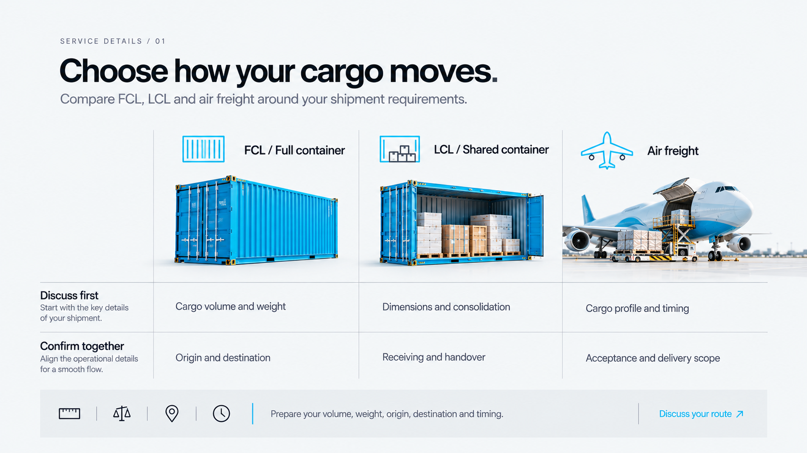
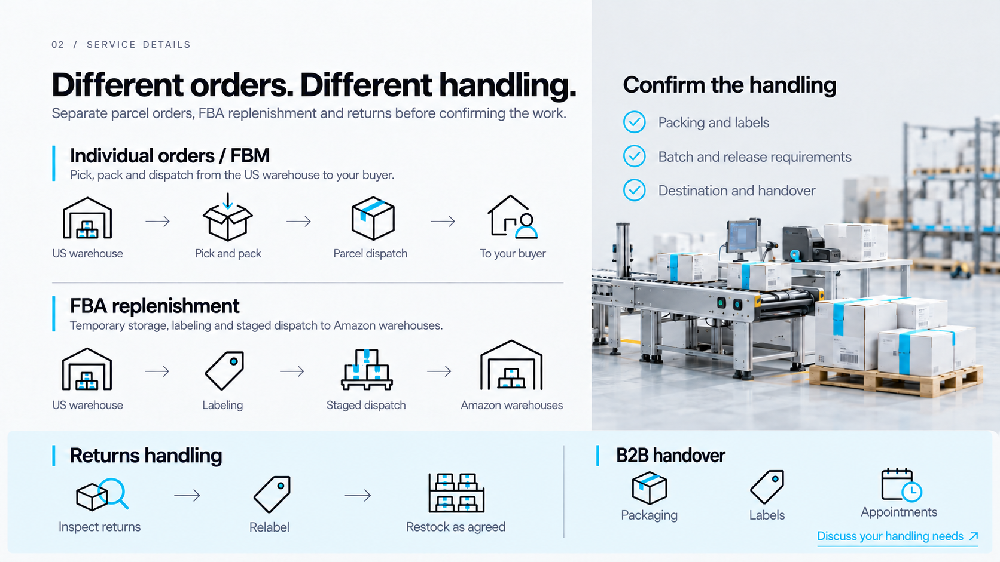
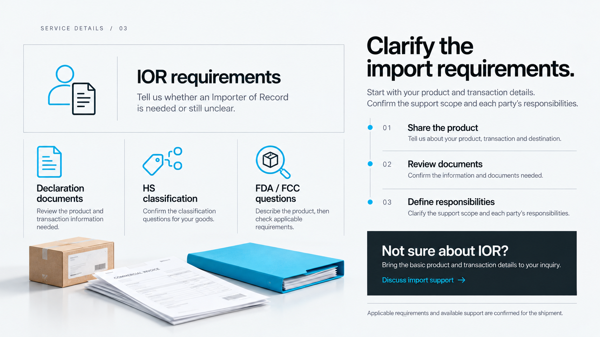
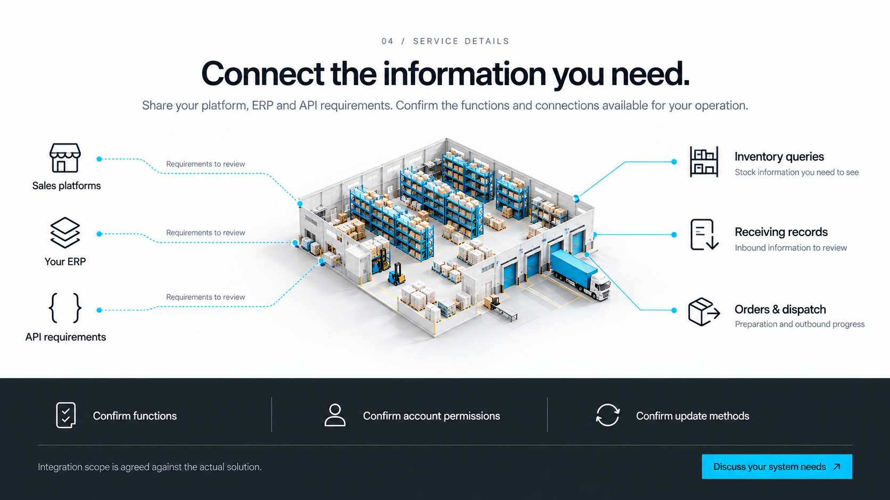

현재 영문 사이트의 시안 스타일을 이어갑니다. 운송 선택, FBA·반품, 수입 상담, 시스템 요구를 원고 V4의 누락 항목에 맞춰 보완했습니다. 화면을 누르면 원본 PNG를 확인할 수 있습니다.
FCL · LCL · 항공 · 같은 기준으로 선택지를 비교하는 매트릭스

단건 주문 · FBA 보충 · 반품 · 두 갈래 작업 경로와 하단 확장 밴드

IOR · HS · FDA/FCC · 비대칭 서류 보드와 상담 단계

플랫폼 · ERP · API · 시스템 관계도와 기능 확인 밴드
